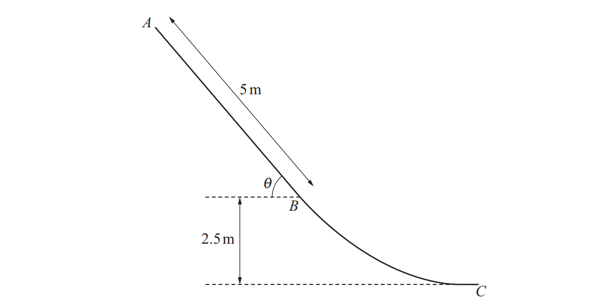

9709 Math / Mechanics / Q6

The diagram shows the vertical cross-section $ABC$ of a rough waterslide. The section $AB$ is a straight line of length $5$ m inclined at an angle of $\theta$ to the horizontal, where $\sin\theta = 0.8$. The point $B$ is $2.5$ m above the level of $C$.
A man of mass $80$ kg, modelled as a particle, slides down the waterslide, starting from rest at $A$. The coefficient of friction between the man and the straight section of the waterslide is $0.1$.
(a) Find the speed of the man at $B$. [5]
It is given that there is no change in the speed of the man when passing through $B$ and that his speed at $C$ is $11$ ms$^{-1}$.
(b) Find the work done against the resistance force as the man moves from $B$ to $C$. [4]Simulation
Potential Energy (PE)
Kinetic Energy (KE)
Work vs Resistance
Speed:
0.5x
v = 0.00 m/s
Step 0: Extract Data
Mass $m = 80$ kg
Section AB: $L=5$m, $\sin\theta=0.8$, $\mu=0.1$
Section BC: Vertical drop $h=2.5$m
Mass $m = 80$ kg
Section AB: $L=5$m, $\sin\theta=0.8$, $\mu=0.1$
Section BC: Vertical drop $h=2.5$m
Part (a): Speed at B
Method: Work-Energy Principle
1. Height drop $h_{AB} = 5 \sin\theta = 4$ m.
PE Loss $= mgh = 3200$ J.
2. Work against Friction:
$R = mg\cos\theta = 800(0.6) = 480$ N
$F = \mu R = 48$ N
$WD_{AB} = 48 \times 5 = 240$ J
3. Conservation:
$KE_B = PE_{loss} - WD = 2960$ J
$\frac{1}{2}(80)v^2 = 2960$
$v = \sqrt{74} \approx \mathbf{8.60 \text{ m/s}}$
1. Height drop $h_{AB} = 5 \sin\theta = 4$ m.
PE Loss $= mgh = 3200$ J.
2. Work against Friction:
$R = mg\cos\theta = 800(0.6) = 480$ N
$F = \mu R = 48$ N
$WD_{AB} = 48 \times 5 = 240$ J
3. Conservation:
$KE_B = PE_{loss} - WD = 2960$ J
$\frac{1}{2}(80)v^2 = 2960$
$v = \sqrt{74} \approx \mathbf{8.60 \text{ m/s}}$
Part (b): Work Done (B to C)
1. Energy Balance:
$PE_{loss} + KE_{start} = KE_{end} + WD$
(Total E before = Total E after + Loss)
2. Calculate Values:
$PE_{loss} = mgh = 80(10)(2.5) = 2000$ J
$KE_B = 2960$ J
$KE_C = \frac{1}{2}(80)(11)^2 = 4840$ J
$\Delta KE = 4840 - 2960 = 1880$ J (Gain)
3. Solve:
$2000 = 1880 + WD$
$WD = \mathbf{120 \text{ J}}$
$PE_{loss} + KE_{start} = KE_{end} + WD$
(Total E before = Total E after + Loss)
2. Calculate Values:
$PE_{loss} = mgh = 80(10)(2.5) = 2000$ J
$KE_B = 2960$ J
$KE_C = \frac{1}{2}(80)(11)^2 = 4840$ J
$\Delta KE = 4840 - 2960 = 1880$ J (Gain)
3. Solve:
$2000 = 1880 + WD$
$WD = \mathbf{120 \text{ J}}$